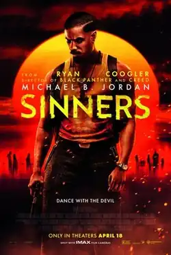

Sinners (2025 film)
| Sinners | |
|---|---|
 Theatrical release poster | |
| Directed by | Ryan Coogler |
| Written by | Ryan Coogler |
| Produced by |
|
| Starring | |
| Cinematography | Autumn Durald Arkapaw |
| Edited by | Michael P. Shawver |
| Music by | Ludwig Göransson |
Production company | |
| Distributed by | Warner Bros. Pictures |
Release dates |
|
Running time | 137 minutes[1] |
| Country | United States |
| Language | English |
| Budget | $90–100 million[2][3][4] |
| Box office | $365.9 million[5][6] |
Sinners is a 2025 American horror film[a] produced, written, and directed by Ryan Coogler.[10] Set in 1932 in the Mississippi Delta, the film stars Michael B. Jordan in dual roles as criminal twin brothers who return to their hometown where they are confronted by a supernatural evil. It co-stars Hailee Steinfeld, Miles Caton (in his film debut), Jack O'Connell, Wunmi Mosaku, Jayme Lawson, Omar Miller, and Delroy Lindo.
Coogler began developing the film through his production company Proximity Media, with Jordan cast in the lead role. The project was announced in January 2024, and after a bidding war, Warner Bros. Pictures acquired distribution rights the following month. Additional roles were cast in April. Principal photography took place from April to July 2024. Longtime Coogler collaborator Ludwig Göransson composed the film's score and served as an executive producer.
Sinners premiered on April 3, 2025, at AMC Lincoln Square in New York City,[11] and was theatrically released in United States on April 18, 2025, by Warner Bros. Pictures.[12] The film received critical acclaim and grossed $365.9 million worldwide.
Plot
In 1932, identical twins and World War I veterans Elijah "Smoke" and Elias "Stack" Moore return to Clarksdale, Mississippi, after seven years spent working for the Chicago Outfit. Using money stolen from gangsters, they purchase a sawmill from landowner Hogwood to start a juke joint for the local Black community. Their cousin Sammie, an aspiring guitarist, joins them despite his pastor father Jedidiah's warnings about the sins of blues music.
The twins recruit pianist Delta Slim as a performer, local Chinese shopkeeper couple Grace and Bo Chow as suppliers, field worker Cornbread as a bouncer, and Smoke's estranged wife Annie as a cook. Annie believes her Hoodoo practices kept the twins safe, but Smoke doubts them for not preventing their infant daughter's death. Stack runs into his white-passing ex-girlfriend Mary, who resents him for abandoning her out of protection. Elsewhere, Irish-immigrant vampire Remmick shelters from Choctaw vampire hunters with a married Klansmen couple, whom he turns into vampires.
On the joint's opening night, Sammie, Delta Slim, and Pearline – a singer with whom Sammie becomes enamored – perform on stage. Sammie's music is transcendent, unknowingly summoning spirits of both past and future to join the crowd. However, the performance also draws in Remmick and his vampires, who offer money and music in exchange for entry. A suspicious Smoke refuses. The twins realize that their patrons' reliance on company scrip makes it impossible for the joint to be profitable. Reasoning with Stack that outside income is necessary, Mary meets Remmick outside, where she is turned. Returning inside, she seduces and fatally bites Stack. Sammie and Smoke discover them; Smoke shoots Mary, but she is unaffected and escapes. Outside, Remmick turns Cornbread.
Smoke closes the joint early; as the patrons and Bo leave, the vampires turn them. Stack revives as a vampire, but flees after Annie repels him with pickled garlic juice. Annie realizes their assailants are vampires and informs the survivors how to deter and defeat them and that killing Remmick will not revert the other vampires back to humans. Although Remmick and his vampires share a hive mind, their personalities remain intact.
Still unable to enter the joint, Remmick attempts to negotiate by inviting the survivors to join him, claiming that vampirism offers immortality and freedom from persecution. He promises to leave in exchange for Sammie, whose musical skills he wants to use to summon the spirits of his lost community; He also reveals that Hogwood heads the local Klan and intends to attack the joint at dawn. They refuse, and Remmick threatens to attack the Chows' daughter Lisa at their home.
Enraged by the threat, Grace invites the vampires in, where a fight ensues. Grace, Bo, Annie, and Delta Slim are killed as a result, while Mary escapes and Remmick turns Pearline. Smoke fights and defeats Stack and then assists Sammie in defeating the vampires, who are all incinerated by the light of the sunrise. Smoke sends Sammie home before he kills Hogwood and his men, but is fatally shot. He reunites with Annie and their daughter after dying. Meanwhile, Sammie ignores his father’s pleas to seek salvation and travels to Chicago.
In 1992, an elderly Sammie, now a successful blues musician, is visited by an ageless Stack and Mary after performing at his blues club. Stack reveals that Smoke spared him at the joint on the condition that Sammie live in peace. After declining the couple's offer of immortality, Sammie performs for them. As they leave, Sammie admits that despite being haunted by that night, until the violence, it was the greatest day of his life. Stack wistfully agrees, as it was the last time he saw Smoke or the sun, and the only time they were all truly free.
Cast
- Michael B. Jordan as the Smokestack Twins:
- Elijah "Smoke" Moore
- Elias "Stack" Moore
- Hailee Steinfeld as Mary, Stack's ex-girlfriend
- Miles Caton as Samuel "Sammie" Moore, Smoke and Stack's 17-year-old cousin, a sharecropper and aspiring blues musician.[13]
- Jack O'Connell as Remmick, an Irish vampire
- Wunmi Mosaku as Annie, Smoke's estranged wife and a Hoodoo practitioner
- Jayme Lawson as Pearline, a married singer with whom Sammie becomes smitten
- Omar Miller as Cornbread, a sharecropper and bouncer
- Delroy Lindo as Delta Slim, an old town harmonica player and musical legend
- Peter Dreimanis as Bert, a local KKK member and Joan's husband
- Lola Kirke as Joan, a KKK member and Bert's wife
- Li Jun Li as Grace Chow, Bo's wife and a shopkeeper
- Saul Williams as Jedidiah Moore, a pastor, Sammie's father, and the twins’ uncle
- Yao as Bo Chow, Grace's husband and a shopkeeper
- David Maldonado as Hogwood, the local KKK leader and Bert's uncle
- Helena Hu as Lisa Chow, Bo and Grace's daughter
- Andrene Ward-Hammond as Ruthie, Sammie's mother
- Nathaniel Arcand as Chayton, a Choctaw vampire hunter
- Emonie Ellison as Therise, Cornbread's pregnant wife
Production
In January 2024, an untitled period film (rumored to take place in the Jim Crow-era South and involve the undead) from writer, director and producer Ryan Coogler was reported to be in development through his production company Proximity Media, with longtime collaborator Michael B. Jordan cast in the lead role.[15][16] Sony Pictures, Warner Bros. Pictures, and Universal Pictures were in a bidding war to acquire the distribution rights to the film, which carried a budget of around $90 million.[17] According to The Hollywood Reporter, Warner Bros. greenlit the film with a production budget of $80 million, but the final budget climbed to $100 million.[4] In exchange for the distribution rights to the film, Coogler was asking studios for first-dollar gross, final cut privilege, and ownership of the film twenty-five years after its release.[18] The following month, Warner Bros. won the distribution rights to the film by acceding to Coogler's terms.[16] Coogler cited the films of Quentin Tarantino, Jordan Peele, Christopher Nolan (who is given an on-screen special thanks credit), Francis Ford Coppola, Brian De Palma, Spike Lee and the Metallica song "One" as sources of inspiration.[19][20]
In April 2024, Jack O'Connell was cast as the film's villain.[21] Delroy Lindo, Jayme Lawson, Omar Benson Miller, Hailee Steinfeld, Li Jun Li, and Lola Kirke were cast in undisclosed roles.[22] Wunmi Mosaku was cast as Smoke's love interest.[23] Yao, Miles Caton, Peter Dreimanis, and Christian Robinson were added the next month.[24][25] Halsey auditioned for the role that went to Steinfeld.[26] Machine Gun Kelly was offered the opportunity to audition for the role that went to Peter Dreimanis but he declined because he was not comfortable saying the n-word.[27]
Principal photography began in New Orleans on April 14, 2024, under the working title Grilled Cheese, and wrapped on July 17.[28][29][30] It was shot by cinematographer Autumn Durald Arkapaw on 65 mm film using a combination of IMAX 15-perf and Ultra Panavision 70 cameras[31] and scenes thus alternate between the 1.43:1 and 2.76:1 aspect ratios.[32][33][34] Kodak created an IMAX version of their Ektachrome 100D 5294 film stock specifically for the production, where it was used for a flashback sequence.[35] The production spent $67.6 million on-location in Louisiana.[36] The film's allocated budget was reported to have ultimately risen to around $100 million.[37][4] The film's production designer Hannah Beachler has acknowledged that the way the church in the film was designed included crossed beams that made the "Wakanda Forever" gesture and paid homage to the late Black Panther star Chadwick Boseman.[38][39] Industrial Light & Magic (ILM), Storm Studios, Rising Sun Pictures, Base FX, Baraboom Studios, Light VFX and Outpost VFX provided the film's visual effects.[40][41] Some of the film's costumes were originally designed by Ruth E. Carter for the planned Marvel Cinematic Universe (MCU) film Blade, but when production on it stalled Carter was approached by Coogler to work on the film. Given both films' shared time period and similar settings within the Prohibition era, Carter was able to reuse her research for Sinners and was allowed by Marvel Studios to buy costumes she made originally for Blade to be used on Sinners.[42]
Music
Coogler's frequent collaborator Ludwig Göransson worked on the soundtrack of Sinners.[43] Göransson described Sinners as a personal and ambitious score, reflecting his own musical journey.[44] He drew inspiration from blues music and performed the score on a 1932 Dobro Cyclops resonator guitar, the same one Sammie carries throughout the film.[43][45] During the pre-production, Coogler sent Göransson several recordings from the 1930s and 1940s, particularly those of Robert Johnson and Tommy Johnson.[46] Göransson and Coogler insisted that Ludwig's wife Serena produce the songs. Serena Göransson, a classically trained violinist, said the southern Black music had to be handled with care and expert consultation and that she felt "like a steward with this project [...] especially with the music. I just feel that it has a life of its own..."[43]
The couple worked with Lawrence "Boo" Mitchell, a blues producer who owns Royal Studios, and visited the B.B. King Museum and local juke joints in Clarksdale and Indianola with him for inspiration. The Göranssons and Mitchell recorded the songs at Royal Studios over five days with musicians such as Alvin Youngblood Hart and Cedric Burnside.[46] Mitchell also brought in other blues musicians such as Brittany Howard, Raphael Saadiq, Bobby Rush, Christone "Kingfish" Ingram and Buddy Guy (who also appears in the film).[46][47] The Göranssons rented a studio converted from a church in New Orleans, and worked with the supporting cast of Jack O'Connell, Lola Kirke, Peter Dreimanis and Jayme Lawson, rehearsing their songs multiple times. Much of the film was recorded live on set, with the cast members performing alongside other blues musicians.[43] Hailee Steinfeld wrote and recorded the original song "Dangerous" for the film.[48]
Unlike most Warner Bros. films, which have soundtracks released through the company's in-house label WaterTower Music or record labels owned by Warner Music Group, the soundtrack and score to Sinners were released through Sony Music labels.[45] The soundtrack was released on Sony Masterworks on April 18, 2025, the same day as the film,[49] featuring 22 tracks performed by an array of blues musicians, alongside the cast members.[50][51] The lead single "Sinners," performed by Rod Wave, was released two weeks prior.[45][52]
Release
Theatrical
Sinners was released in the United States and Canada on April 18, 2025. It was previously scheduled for release on March 7, 2025, but was delayed to April (swapping dates with Mickey 17) to allow for more time needed in post-production due to the scarcity of film stock labs for the project, which heavily utilized film cameras.[53][54][55] In addition to a standard digital release, the film also received 10 IMAX 70 mm prints,[56][57] and 5 standard 70 mm prints.[58][59]
In late May, the film was screened in Clarksdale, Mississippi, where it is set. Clarksdale does not have a working movie theater, but the civic auditorium hosted six showings, introduced by Coogler, Göransson, and other filmmakers. The town also hosted panels and Q&As related to the film over the three-day weekend festival.[60][61]
AMC Theaters nationwide scheduled screenings of the film on Juneteenth at discounted prices.[62]
Home media
Sinners was released on digital streaming on June 3, 2025,[63] and on 4K Ultra HD Blu-ray, Blu-ray, and DVD on July 8, 2025.[64] It premiered on HBO Max on July 4, 2025.[65] Warner Bros. announced that Sinners would also be available to stream on HBO Max with interpretation in Black American Sign Language (BASL); the company stated that it was the first film to ever be offered by a streaming service with BASL.[66]
Reception
Box office
As of July 22, 2025, Sinners has grossed $278.6 million in the United States and Canada, and $87.3 million in other territories, for a worldwide total of $365.9 million.[5][6] Some publications said the film needed to gross $170–185 million to break-even when factoring in its production budget, Coogler's first-dollar gross, premium video-on-demand, and streaming deals with Prime and Netflix.[67][68] Other industry sources placed the break-even point at $200–225 million, with Puck going as high as $300 million, because of the film's budget, estimated $50–60 million marketing spend, and the presumption that theaters keep half of ticket sales.[69][70] Many fans of the film and industry figures like Ben Stiller called out media coverage, specifically pieces from Variety, The New York Times, and Business Insider, that seemed to downplay the film's success by focusing on its box office performance, Coogler's salary, and speculation about its profitability.[71][72][73][74]
In the United States and Canada, Sinners was projected to gross $30–40 million from 3,308 theaters in its opening weekend.[68][75] The film made $19.2 million on its first day, including an estimated $4.7 million from Thursday night previews. It went on to debut to $48 million, topping projections to finish first at the box office, upsetting Warner Bros.' own holdover A Minecraft Movie, which grossed $40.5 million in its third weekend.[67] The opening marked the best start for an original film since Jordan Peele's Us ($71 million in 2019), and the first time a studio had two films make more than $40 million each over a single weekend since 2009. Walk-up business, particularly on Saturday, and word-of-mouth contributed substantially to the opening, with 61% of attendees buying their ticket the same day.[67][76] Premium large format and IMAX screenings made up 45% of the opening.[77] Exit polling indicated that 47% of moviegoers bought tickets because of Jordan, 40% for Coogler, and 45% because of positive word-of-mouth, and that 64% of attendees were 35 or younger, with 46% being 25–34 and 2% under 18. The audience was 49% Black, 27% Caucasian, 14% Latino and Hispanic, 6% Asian, and 4% Native American/other, "a strong turnout among different demographics".[67][70][76][78] Sinners also made $15.4 million from 71 international markets, for a global opening weekend of $61 million.[79]
Word-of-mouth momentum helped Sinners earn the second-best Monday haul for an R-rated horror film at $7.8 million, behind It ($8.6 million in 2017).[80] It ended its first week ahead of the seven-day totals of The Conjuring ($61.7 million in 2013) and Get Out ($49.8 million in 2017) with $77.5 million.[78] Sinners exceeded second weekend projections ($19.2–24 million)[81] to outgross new releases and top the box office again with $45.7 million. Its 4.9% drop is the third-best second-weekend performance for a film that debuted to more than $40 million after Shrek (+0.3% in 2001) and Avatar (−1.8% in 2009);[82] the second-best second weekend for an R-rated horror film after It ($60.1 million); and the third-best second weekend for Coogler after Black Panther ($111.6 million in 2018) and its sequel Wakanda Forever ($66.4 million in 2022). Deadline noted that the film's audience had broadened, with women making up 56% of patrons (up from 43% in the first weekend) and those under 25 comprising 34% (up from 20%).[78] The film also made $13.5 million over that frame from 71 foreign markets, a total attributed to word-of-mouth and strong holds in several countries.[83]
After ceding its premium-large format and IMAX screens to newcomer Thunderbolts*, Sinners achieved the best third weekend for a horror film with $33 million (a 28% drop), topping It ($29.7 million).[84] Helped by "exceptional holds" in Latin America and Europe, it also made $10.4 million internationally over the weekend.[85] Sinners crossed $200 million domestically in its fourth weekend,[86] becoming the first original film to do so since Coco in 2017.[87]
Critical response
On the review aggregator website Rotten Tomatoes, 97% of 405 critics' reviews are positive. The website's consensus reads: "A rip-roaring fusion of masterful visual storytelling and toe-tapping music, writer-director Ryan Coogler's first original blockbuster reveals the full scope of his singular imagination."[88] Metacritic, which uses a weighted average, assigned the film a score of 84 out of 100, based on 55 critics, indicating "universal acclaim".[89] Audiences polled by CinemaScore gave the film an average grade of "A" on an A+ to F scale (the highest grade for a horror film in 35 years), while those surveyed by PostTrak gave it a 92% overall positive score, with 84% saying they would definitely recommend the film.[67]
Reviewers praised Coogler's vision and the film's cinematography; Rolling Stone critic A.A. Dowd commented that the director was "swinging wide and far beyond the boundaries of franchise fare", while Wendy Ide of The Observer wrote that "Coogler's assurance and vision holds everything together."[90][91][92] Ann Hornaday of the Washington Post cited Coogler's "impressive self-awareness", as well as Jordan, Mosaku, and Caton's performances.[93] A number of critics suggested that the film's more grounded first half was superior to the supernaturally driven later acts.[94][95][96] Peter Travers of ABC News declared Sinners the best movie yet released in 2025, writing that it was Coogler and Jordan's "best and most daring work yet".[97] In a more negative review, The Wall Street Journal's Zachary Barnes praised Jordan's performance, but wrote that Sinners did not pull together thematically, arguing that "Mr. Coogler's imagination remains limited by the conventions of Marveldom."[98] Sho Baraka of Christianity Today notes, "Just be aware that ... the bawdy themes will tutor you in practices that would make your marriage counselor blush. ... Sinners does speak frankly about the bloodsucking perversion of religion in the United States. But the same plantation folks who suffered hypocrisy knew of a healer who gave joy [that] spawned spirituals, which gave birth to blues."[99] Several critics drew comparisons between the film and Robert Rodriguez's 1996 action-horror film From Dusk till Dawn.[100][101][102] Coogler cited From Dusk Till Dawn as an inspiration for the film, but compared it more to The Faculty, another film by Rodriguez.[103]
The music of Sinners was widely praised by critics, who noted its centrality to the film's story. David Ehrlich of IndieWire wrote "This isn't the first time that a Ludwig Göransson score has been inextricable from the texture of a Ryan Coogler movie, but Sinners opens with someone talking about a kind of music 'so pure it can pierce the veil between life and death, past and future'...and then proceeds to show us exactly what that sounds like."[104] Mae Abdulbaki of Screen Rant stated "The music alone, from the songs played by the characters to the score by Ludwig Göransson, takes the film to another level."[105] Amy Nicholson of Los Angeles Times described the score as "phenomenal", adding it is music "you've never heard and yet it seems to come from deep inside our pop-cultural soul."[7] David Rooney of The Hollywood Reporter described it as "flavorful [...] with the score and the blues performances fusing together to intoxicating effect."[106] Barnes, of The Wall Street Journal, called Göransson's score "a twangy marvel of genre-crossing interpolation".[98]
In June 2025, IndieWire ranked the film at number 65 on its list of "The 100 Best Movies of the 2020s (So Far)."[107] In July 2025, The Hollywood Reporter ranked it number 16 on its list of the "25 Best Horror Movies of the 21st Century."[108]
Accolades
| Award | Date of ceremony | Category | Recipient(s) | Result | Ref. |
|---|---|---|---|---|---|
| Astra Midseason Movie Awards | July 3, 2025 | Best Picture | Sinners | Won | [109][110] |
| Best Director | Ryan Coogler | Won | |||
| Best Actor | Michael B. Jordan | Won | |||
| Best Supporting Actor | Miles Caton | Won | |||
| Best Supporting Actress | Wunmi Mosaku | Runner-up | |||
| Hailee Steinfeld | Won | ||||
| Best Screenplay | Sinners | Won | |||
| Critics' Choice Super Awards | August 7, 2025 | Best Horror Movie | Sinners | Won | [111] |
| Best Actor in a Horror Movie | Michael B. Jordan | Won | |||
| Best Actress in a Horror Movie | Wunmi Mosaku | Nominated | |||
| Best Villain in a Movie | Jack O'Connell | Nominated | |||
| Fangoria Chainsaw Awards | October 2025 | Best Wide Release | Sinners | Pending | [112][113] |
| Best Director | Ryan Coogler | Pending | |||
| Best Lead Performance | Michael B. Jordan | Pending | |||
| Best Supporting Performance | Miles Caton | Pending | |||
| Wunmi Mosaku | Pending | ||||
| Jack O'Connell | Pending | ||||
| Best Screenplay | Ryan Coogler | Pending | |||
| Best Cinematography | Autumn Durald Arkapaw | Pending | |||
| Best Score | Ludwig Göransson | Pending | |||
| Best Costume Design | Ruth E. Carter | Pending | |||
| Golden Trailer Awards | May 29, 2025 | Best Horror | Warner Bros. Pictures, AV Squad (for "Magic") | Won | [114] [115] |
| Best Music | Nominated | ||||
| Best Sound Editing | Warner Bros. Pictures, AV Squad (for "Seen") | Won | |||
| Best Thriller TV Spot | Warner Bros. Pictures, Create Advertising Group (for "Ready") | Won | |||
| Best Digital | Horror/Thriller | Warner Bros. Pictures, AV Squad (for "Happy New Year") | Nominated | |||
| Best Horror/Thriller TrailerByte (Feature Film) | Warner Bros. Pictures, AV Squad (for "Dark Mode") | Nominated | |||
| Best Horror Poster | Warner Bros. Pictures, AV Print | Nominated | |||
| Best International Poster | Nominated | ||||
| Most Original Poster | Won |
Notes
- ^ Described as a genre-defying film, Sinners incorporates a hybrid of Southern Gothic, period supernatural horror, and musical elements.[7][8][9]
References
- ^ "Sinners (15)". BBFC. April 1, 2025. Archived from the original on April 10, 2025. Retrieved April 10, 2025.
- ^ "Sinners Scores $45 Million in Massive Second Weekend". Variety. May 26, 2025. Archived from the original on April 27, 2025. Retrieved May 26, 2025.
- ^ Brian Welk (April 21, 2025). "Let's Talk About 'Sinners' and Profitability". IndieWire. Archived from the original on April 21, 2025. Retrieved May 27, 2025.
- ^ a b c Galuppo, Mia; Kit, Borys (April 7, 2025). "Minecraft Is a Massive Hit, Giving Michael De Luca and Pamela Abdy an Extra Life". The Hollywood Reporter. Archived from the original on April 7, 2025. Retrieved April 8, 2025.
- ^ a b "Sinners (2025) – Financial Information". The Numbers. Nash Information Services, LLC. Archived from the original on May 2, 2025. Retrieved July 16, 2025.
- ^ a b "Sinners". Box Office Mojo. IMDb. Archived from the original on May 1, 2025. Retrieved July 16, 2025.
- ^ a b Nicholson, Amy (April 17, 2025). "Review: Ryan Coogler's gory and glorious 'Sinners,' a Southern vampire horror-musical, is a hell of a high". Los Angeles Times. Archived from the original on April 18, 2025. Retrieved April 18, 2025.
- ^ "'Sinners' Is a Black Musical". Autostraddle. April 24, 2025. Archived from the original on April 29, 2025. Retrieved May 13, 2025.
- ^ Thompson, Paul A. (April 22, 2025). "Sinners Review: Finally, A Transcendental Southern Gothic Vampire Musical Blockbuster". Pitchfork. Retrieved May 13, 2025.
- ^ Barber, Nicholas. "'It doesn't stick to the rules': The reason Sinners has become a true box-office sensation". www.bbc.com. Retrieved May 2, 2025.
- ^ VanHoose, Benjamin (April 3, 2025). "Michael B. Jordan Has Fans Seeing Double with Stylish Twin Stunt at Sinners Premiere". People. Retrieved June 8, 2025.
- ^ 'SINNERS' Movie Premiere Michael B. Jordan, Hailee Steinfeld, Ryan Coogler & Cast - April 3, 2025. YouTube. April 3, 2025. Archived from the original on April 11, 2025. Retrieved May 11, 2025.
- ^ Jackson, Angelique (April 5, 2025). "How Ryan Coogler Discovered Musical Prodigy Miles Caton for 'Sinners' and What the New Actor Learned from Michael B. Jordan". Variety. Retrieved June 3, 2025.
- ^ Willman, Chris (April 25, 2025). "Legendary Bluesman Buddy Guy on His Buzzy Movie Role in 'Sinners': 'It's a Dream Come True, to Be Honest... I Did It to Help the Blues'". Variety. Archived from the original on June 3, 2025. Retrieved June 3, 2025.
- ^ Kit, Borys (January 18, 2024). "Ryan Coogler, Michael B. Jordan Teaming for Secret Genre Movie (Exclusive)". The Hollywood Reporter. Archived from the original on January 22, 2024. Retrieved January 23, 2024.
- ^ a b Kit, Borys (February 7, 2024). "Ryan Coogler-Michael B. Jordan Secret Movie Lands at Warner Bros". The Hollywood Reporter. Archived from the original on February 8, 2024. Retrieved February 8, 2024.
- ^ Fleming, Mike Jr. (January 23, 2024). "Ryan Coogler & Michael B. Jordan Vampire Pic Has 3 Studios Vying In Year's 1st Big Auction: The Dish". Deadline Hollywood. Archived from the original on January 23, 2024. Retrieved January 23, 2024.
- ^ Guerrasio, Jason (April 8, 2025). "Ryan Coogler explains the personal reason he fought to own the rights to his new movie 'Sinners' and none of his other films". Business Insider. Archived from the original on April 16, 2025. Retrieved April 25, 2025.
- ^ Demegillo, Manuel (April 23, 2025). "Sinners Director Ryan Coogler Thanks Lengthy List of 'Cinematic Influences' Who Inspired The Film". Comic Book Resources. Retrieved June 20, 2025.
- ^ https://www.sfchronicle.com/entertainment/article/ryan-coogler-sinners-metallica-20265735.php
- ^ Grobar, Matt (April 3, 2024). "Jack O'Connell To Play Villain Role Opposite Michael B. Jordan In Ryan Coogler's Genre Pic For Warner Bros". Deadline Hollywood. Archived from the original on April 3, 2024. Retrieved April 3, 2024.
- ^
Attributed to multiple sources:
- Kit, Borys (April 3, 2024). "Delroy Lindo Joins Michael B. Jordan in Ryan Coogler's Untitled Supernatural Thriller (Exclusive)". The Hollywood Reporter. Archived from the original on April 3, 2024. Retrieved April 3, 2024.
- Grobar, Matt (April 9, 2024). "Omar Benson Miller Latest To Join Ryan Coogler-Michael B. Jordan Thriller". Deadline Hollywood. Archived from the original on April 9, 2024. Retrieved April 9, 2024.
- Kit, Borys (April 9, 2024). "Hailee Steinfeld Joins Michael B. Jordan in Ryan Coogler's Untitled Supernatural Thriller (Exclusive)". The Hollywood Reporter. Archived from the original on April 9, 2024. Retrieved April 9, 2024.
- Grobar, Matt (April 22, 2024). "'Babylon's Li Jun Li Latest To Join Ryan Coogler's Supernatural Thriller Starring Michael B. Jordan". Deadline Hollywood. Archived from the original on April 22, 2024. Retrieved April 22, 2024.
- Grobar, Matt (April 26, 2024). "Lola Kirke Joins Ryan Coogler's Supernatural Thriller". Deadline Hollywood. Archived from the original on September 23, 2024. Retrieved April 26, 2024.
- ^ Kit, Borys (April 8, 2024). "'Loki' Actress Wunmi Mosaku Joins Michael B. Jordan in Ryan Coogler's Untitled Supernatural Thriller (Exclusive)". [The Hollywood Reporter. Archived from the original on April 8, 2024. Retrieved April 8, 2024.
- ^ Grobar, Matt (May 1, 2024). "Newcomers Yao, Miles Caton and Peter Dreimanis To Round Out Cast Of Coogler-Jordan Thriller". Deadline Hollywood. Archived from the original on September 23, 2024. Retrieved May 1, 2024.
- ^ Grobar, Matt (May 8, 2024). "Christian Robinson Joins Ryan Coogler's Supernatural Thriller For Warner Bros". Deadline Hollywood.
- ^ Blevins, Adam (May 11, 2025). "'There's Not a Lot of White Passing Black Girls in Hollywood': Halsey Reveals She Auditioned for Ryan Coogler's 'Sinners'". Collider.
- ^ Machine Gun Kelly Claims He Was “Supposed” To Audition For ‘Sinners’ But Wouldn't Say N-Word
- ^ "We are officially wrapped with principal photography on GRILLED CHEESE- Thank you to everyone for your hard work! It'll be released on March 7th, 2025 in IMAX!". Caballero Casting. July 17, 2024. Archived from the original on July 18, 2024. Retrieved July 18, 2024 – via Facebook.
- ^ Tinoco, Armando (April 14, 2024). "Ryan Coogler's New Thriller Starring Michael B. Jordan Starts Filming". Deadline Hollywood. Archived from the original on April 15, 2024. Retrieved April 14, 2024.
- ^ Browski, Rich (March 21, 2024). "Production Weekly – Issue 1394 – Thursday, March 21, 2024 / 184 Listings – 43 Pages". Production Weekly. No. 1394 (published March 20, 2024). p. 38. Archived from the original on March 21, 2024. Retrieved March 21, 2024.
- ^ Desowitz, Bill (March 12, 2025). "20 Movies Shot on Film in 2025: Separate Safdie Brothers, Paul Thomas Anderson, and More". IndieWire. Retrieved March 13, 2025.
- ^ Mendelovich, Yossy (September 29, 2024). "Sinners Trailer Released: Shot on IMAX Film Cameras by Cinematographer Autumn Durald Arkapaw". Y.M.Cinema Magazine. Retrieved December 21, 2024.
- ^ "'Sinners' Trailer Unleashed: Michael B. Jordan in Vampire Horror Film from Ryan Coogler". Screen Realm. September 25, 2024. Retrieved December 21, 2024.
- ^ "Director Ryan Coogler Takes Us Inside the Newest Trailer for 'Sinners'". Nerds of Color. January 28, 2025. Archived from the original on February 25, 2025. Retrieved March 6, 2025.
- ^ "Autumn Durald Arkapaw ASC created an immersive experience and slices of cinematic history shooting KODAK large format 65mm film for Ryan Coogler's sensational 'Sinners'". Kodak. May 13, 2025. Retrieved May 14, 2025.
- ^ "Fastlane NextGen: Initial Certification Search" (Type "grilled cheese" in the search box). Louisiana Economic Development. Archived from the original on June 15, 2020. Retrieved October 7, 2024.
- ^ D'Alessandro, Anthony (January 15, 2025). "Why Warner Bros Shook Up Its Feature Exec Ranks As It Braces For An Auteur-Driven 2025 Slate". Deadline Hollywood. Archived from the original on January 19, 2025. Retrieved January 15, 2025.
- ^ Biggs, Jade (April 28, 2025). "Did You Spot This Subtle Chadwick Boseman Tribute in the 'Sinners' Movie?". Cosmopolitan. Retrieved May 16, 2025.
- ^ Gearan, Hannah (May 16, 2025). "Sinners' Hidden Tribute To Chadwick Boseman Explained". Screen Rant. Archived from the original on May 17, 2025. Retrieved May 16, 2025.
- ^ "Sinners".
- ^ "Sinners". June 9, 2025.
- ^ Dunn, Jack (July 4, 2025). "'Sinners' Producer Says Costumes Were Purchased From Marvel's 'Blade' Reboot That 'Ended Up Not Shooting': They Had a 'Warehouse Full of Period-Appropriate Clothes'". Variety. Retrieved July 6, 2025.
- ^ a b c d Greiving, Tim (April 16, 2025). "They found the music of 'Sinners' together — just as they have from the beginning". Los Angeles Times. Archived from the original on April 17, 2025. Retrieved April 18, 2025.
- ^ Thomas, Lou (April 15, 2025). "'We're recreating the devil's music': composer Ludwig Göransson on Sinners". British Film Institute. Archived from the original on April 18, 2025. Retrieved April 18, 2025.
- ^ a b c Lee, Abigail (April 9, 2025). "'Sinners' Soundtrack to Feature Music by Ludwig Göransson, Brittany Howard, Rod Wave, James Blake and More". Variety. Archived from the original on April 11, 2025. Retrieved April 18, 2025.
- ^ a b c Dy, Gayle (April 16, 2025). "Ludwig Göransson on Producing the 'Sinners' Soundtrack". Rolling Stone Philippines. Archived from the original on April 18, 2025. Retrieved April 18, 2025.
- ^ "'Sinners' director Ryan Coogler and composer Ludwig Göransson on their creative relationship: 'We have to give people a unique, visceral movie experience'". NME. April 17, 2025. Archived from the original on April 18, 2025. Retrieved April 18, 2025.
- ^ Dailey, Hannah (April 11, 2025). "Hailee Steinfeld Returns to Music With 'Dangerous' Original Song on 'Sinners' Soundtrack". Billboard. Archived from the original on April 12, 2025. Retrieved April 18, 2025.
- ^ "'Sinners' Soundtrack Album Details". Film Music Reporter. April 9, 2025. Archived from the original on April 9, 2025. Retrieved April 18, 2025.
- ^ Zachary, Brandon (April 17, 2025). "Sinners' Soundtrack Guide: Every Song & When They Play". Screen Rant. Archived from the original on April 18, 2025. Retrieved April 18, 2025.
- ^ Edwards, Chris (April 17, 2025). "Here's every song on the 'Sinners' soundtrack". NME. Archived from the original on April 18, 2025. Retrieved April 18, 2025.
- ^ "Rod Wave's Title Song from Ryan Coogler's 'Sinners' Released". Film Music Reporter. April 7, 2025. Archived from the original on April 7, 2025. Retrieved April 18, 2025.
- ^ Squires, John (September 23, 2024). "'Sinners' – Ryan Coogler's Vampire Movie Starring Michael B. Jordan Gets an Official Title". Bloody Disgusting. Archived from the original on September 23, 2024. Retrieved September 23, 2024.
- ^ Couch, Aaron (March 19, 2024). "Ryan Coogler's Next Movie Set for March 2025". The Hollywood Reporter. Archived from the original on March 20, 2024. Retrieved March 20, 2024.
- ^ D'Alessandro, Anthony (December 27, 2024). "'The Batman' Sequel Heads To 2027, Tom Cruise & Alejandro G. Iñárritu Pic Sets 2026 Release, 'Sinners' & 'Mickey 17' Switch Places". Deadline. Archived from the original on December 27, 2024. Retrieved December 27, 2024.
- ^ Har-Even, Benny. "Ryan Coogler's 'Sinners' To Give IMAX Fans Their 1.43:1 Aspect Ratio Fix". Forbes. Archived from the original on February 22, 2025. Retrieved February 23, 2025.
- ^ "Sinners". British Film Institute. February 24, 2025.
- ^ Gray, Jeremy (April 14, 2025). "'Sinners' Is the First Movie to Be Simultaneously Shot on Ultra Panavision 70 and IMAX". PetaPixel. Retrieved May 2, 2025.
- ^ Aspect Ratios with Sinners Director Ryan Coogler. Retrieved May 2, 2025 – via www.youtube.com.
- ^ Walker, Adria R. (May 30, 2025). "Sinners finally comes home to Clarksdale: a three-day festival premieres the film in its home town". The Guardian. ISSN 0261-3077. Retrieved May 31, 2025.
- ^ Cochrane, Emily; Doyle, Rory (June 4, 2025). "'Sinners' Goes Beyond Horror and the Blues for Clarksdale, Miss". The New York Times. ISSN 0362-4331. Retrieved June 4, 2025.
- ^ Kenney, Tanasia. "'Sinners' returns to AMC for discounted screening on Juneteenth. What to know". Miami Herald. Retrieved July 9, 2025.
- ^ Lammers, Tim (May 21, 2025). "Vampire Hit 'Sinners' Gets Digital Streaming Date". Forbes. Archived from the original on May 26, 2025. Retrieved May 29, 2025.
- ^ Mercuri, Monica (May 19, 2025). "Is 'Sinners' Coming To Streaming Soon? Here's The Release Date". Forbes. Archived from the original on June 1, 2025. Retrieved May 29, 2025.
- ^ Petski, Denise (June 20, 2025). "'Sinners' Sets Max Streaming Release Date". Deadline. Archived from the original on June 20, 2025. Retrieved June 21, 2025.
- ^ Maglio, Tony (June 30, 2025). "'Sinners' on Max Will Include a Black American Sign Language Version". The Hollywood Reporter. Retrieved August 3, 2025.
- ^ a b c d e D'Alessandro, Anthony (April 21, 2025). "Sinners Even More Divine With $48M No. 1 Easter Box Office Opening – Monday Update". Deadline Hollywood. Archived from the original on April 19, 2025. Retrieved April 21, 2025.
- ^ a b Donnelly, Matt (March 28, 2025). "Mike De Luca and Pam Abdy Under Fire at Warner Bros. Amid Box Office Flops: 'We Didn't Want to Fail' David Zaslav (Exclusive)". Variety. Archived from the original on March 28, 2025. Retrieved March 28, 2025.
- ^ Masters, Kim (April 14, 2025). "The Mike-and-Pam Respite & Ellison's Strange Structure". Puck. Retrieved April 21, 2025.
- ^ a b Rubin, Rebecca (April 21, 2025). "5 Reasons Why Ryan Coogler and Michael B. Jordan's Sinners Ruled the Box Office". Variety. Archived from the original on April 22, 2025. Retrieved April 21, 2025.
- ^ "Fans Call Out Media for Questionable Coverage of Sinners Massive Box Office Success". The Source. April 23, 2025. Archived from the original on April 24, 2025. Retrieved April 25, 2025.
- ^ Thornton, Cedric (April 23, 2025). "Ben Stiller Clowns 'Variety Magazine's' Shady Headline That Downplayed Sinners Successful Opening Weekend". Black Enterprise. Archived from the original on April 24, 2025. Retrieved April 25, 2025.
- ^ Walsh, S.M. (April 20, 2025). "Ben Stiller Pushes Back on Sinners Box Office Narrative in Viral Tweet". Men's Journal. Archived from the original on April 23, 2025. Retrieved April 25, 2025.
- ^ Spilde, Coleman (April 26, 2025). "Sinners is a smash. So why is Hollywood putting an asterisk on its success?". Salon.com. Archived from the original on April 27, 2025. Retrieved April 27, 2025.
- ^ "Weekend Preview: Minecraft Goes Head-to-Head With Sinners". Boxoffice Pro. April 16, 2025. Retrieved April 21, 2025.
- ^ a b McClintock, Pamela (April 21, 2025). "Box Office Upset: Sinners Widens Lead Over Minecraft With $48M in Surprise Easter Victory". The Hollywood Reporter. Archived from the original on April 20, 2025. Retrieved April 21, 2025.
- ^ Rubin, Rebecca (April 21, 2025). "Ryan Coogler and Michael B. Jordan's Sinners Takes Box Office Crown With $48 Million". Variety. Archived from the original on April 21, 2025. Retrieved April 21, 2025.
- ^ a b c D'Alessandro, Anthony (April 27, 2025). "Sinners Heaven-Sent $45M Second Weekend, Revenge Of The Sith Powerful $25M, Accountant 2 $24M+, Minecraft $22M+ As Moviegoing Bounces Back". Deadline Hollywood. Retrieved April 27, 2025.
- ^ Tartaglione, Nancy (April 20, 2025). "A Minecraft Movie Builds To $721M Global, Sinners Feasts On $61M WW Bow – International Box Office". The Hollywood Reporter. Archived from the original on April 21, 2025. Retrieved April 20, 2025.
- ^ D'Alessandro, Anthony (April 22, 2025). "Sinners Scores Second Best Monday For R-Rated Horror Movie At Box Office". Deadline Hollywood. Archived from the original on April 25, 2025. Retrieved April 25, 2025.
- ^ D'Alessandro, Anthony (April 24, 2025). "Sinners Poised To Out-Number The Accountant 2 At Weekend Box Office – Preview". Deadline Hollywood. Retrieved April 27, 2025.
- ^ Childress, Erik (April 28, 2025). "Weekend Box Office: Sinners Holds Strong for Another Big Weekend". Rotten Tomatoes. Archived from the original on April 29, 2025. Retrieved April 28, 2025.
- ^ Tartaglione, Nancy (April 27, 2025). "Minecraft On Another Level With $817M Global, Sinners Holdover Halo Takes WW To $162M, Revenge Of The Sith Galactic At $42M+ Reissue & Accountant 2 Puts $38M On The Books – International Box Office". Deadline Hollywood. Archived from the original on April 27, 2025. Retrieved April 28, 2025.
- ^ D'Alessandro, Anthony (May 4, 2025). "Thunderbolts* Settles At $76M Opening, Sinners Full Of Grace With $33M, Rust Not Good – Sunday AM Box Office Update". Deadline Hollywood. Archived from the original on May 5, 2025. Retrieved May 4, 2025.
- ^ Tartaglione, Nancy (May 4, 2025). "Thunderbolts* Rolls To $162M+ Global Opening; Minecraft Nears $900M WW & Sinners Has Another Saintly Hold – International Box Office". Deadline Hollywood. Retrieved May 4, 2025.
- ^ D'Alessandro, Anthony (May 11, 2025). "Thunderbolts* Simmers $33M 2nd Frame; Sinners Strong $21M 4th Weekend; Making Sense Of Single Digit Bows Clown, Shadow Force & Fight Or Flight – Box Office Update". Deadline Hollywood. Archived from the original on May 12, 2025. Retrieved May 11, 2025.
- ^ Fuster, Jeremy (May 11, 2025). "'Sinners' Passes Box Office Milestone No Original Film Has Reached in 8 Years". TheWrap. Archived from the original on May 13, 2025.
- ^ "Sinners". Rotten Tomatoes. Fandango Media. Archived from the original on April 30, 2025. Retrieved June 19, 2025.
- ^ "Sinners". Metacritic. Fandom, Inc. Archived from the original on April 30, 2025. Retrieved April 29, 2025.
- ^ Dowd, A. A. (April 17, 2025). "Is 'Sinners' a Western, Crime Thriller, Southern Gothic, or Monster Movie? Yes". Rolling Stone. Retrieved April 22, 2025.
- ^ Ide, Wendy (April 19, 2025). "Sinners review – Ryan Coogler's sexy southern gothic horror is a blast". The Observer. ISSN 0029-7712. Retrieved April 22, 2025.
- ^ Noveck, Jocelyn (April 16, 2025). "Michael B. Jordan has double duty in Ryan Coogler's pulsating, vein-bursting 'Sinners'". AP News. Retrieved April 22, 2025.
- ^ Hornaday, Ann (April 15, 2025). "Review | 'Sinners': This culture war leaves blood on the floor". The Washington Post. Archived from the original on April 20, 2025. Retrieved April 26, 2025.
- ^ Hall, Sandra (April 16, 2025). "Historic bluesfest or semi-comic bloodfest? Sinners is both". The Sydney Morning Herald. Retrieved April 22, 2025.
- ^ Bradshaw, Peter (April 10, 2025). "Sinners review – Ryan Coogler's deep-south gonzo horror down at the crossroads". The Guardian. ISSN 0261-3077. Retrieved April 22, 2025.
- ^ "'Sinners' is one of the most interesting and audacious movies this year". NPR. Retrieved April 22, 2025.
- ^ "Peter Travers Movie Reviews & Previews | Rotten Tomatoes". www.rottentomatoes.com. Archived from the original on April 7, 2025. Retrieved April 22, 2025.
- ^ a b Barnes, Zachary (April 17, 2025). "'Sinners' Review: Ryan Coogler's Vampiric Return". The Wall Street Journal. Archived from the original on April 17, 2025. Retrieved April 18, 2025.
- ^ Baraka, Sho (May 14, 2025). "'Sinners' and the Panic-Praise Problem". Christianity Today. Archived from the original on May 18, 2025. Retrieved May 17, 2025.
- ^ Gleiberman, Owen (April 10, 2025). "'Sinners' Review: Ryan Coogler's Deep South From-Dusk-Till-Dawn Vampire Film Is a Lavishly Serious Popcorn Movie, With Michael B. Jordan in a Dual Role as Criminal Brothers". Variety. Retrieved May 28, 2025.
- ^ "Sinners movie review & film summary (2025) | Roger Ebert". www.rogerebert.com. Retrieved May 28, 2025.
- ^ "Movie review: 'Sinners' boldly blends horror and music, past with present - UPI.com". UPI. Retrieved May 28, 2025.
- ^ Sims, David (April 23, 2025). "Ryan Coogler Didn't Want to Hide Anymore". The Atlantic. Archived from the original on April 28, 2025. Retrieved May 28, 2025.
- ^ Ehrlich, David (April 10, 2025). "'Sinners' Review: Ryan Coogler's Best Movie So Far Is a Bloody, Bluesy, and Throbbingly Fun Vampire Saga". IndieWire. Archived from the original on April 12, 2025. Retrieved April 18, 2025.
- ^ Abdulbaki, Mae (April 15, 2025). "Sinners Review: Ryan Coogler's Exquisite Vampire Horror Is Already One Of The Best Films Of The Year". Screen Rant. Archived from the original on April 16, 2025. Retrieved April 18, 2025.
- ^ Rooney, David (April 10, 2025). "'Sinners' Review: Michael B. Jordan Doubles the Magnetism in Ryan Coogler's Audacious Journey Into a Community's Violated Soul". The Hollywood Reporter. Archived from the original on April 11, 2025. Retrieved April 18, 2025.
- ^ "The 100 Best Movies of the 2020s (So Far)". June 16, 2025. Retrieved June 23, 2025.
- ^ "25 Best Horror Movies of the 21st Century, Ranked". July 23, 2025. Retrieved August 2, 2025.
- ^ Neglia, Matt (June 30, 2025). "The 2025 Hollywood Creative Alliance (HCA) Midseason Astra Award Nominations". Next Best Picture. Archived from the original on July 2, 2025. Retrieved June 30, 2025.
- ^ Shanahan, Don (July 3, 2025). "'Sinners' Sweeps the 2025 Midseason Movie Astra Awards". Film Obsessive. Archived from the original on July 8, 2025. Retrieved July 8, 2025.
- ^ Hipes, Patrick (June 11, 2025). "'Deadpool & Wolverine', 'Thunderbolts*', 'The Last Of Us' Lead Nominees For Critics Choice Super Awards". Deadline Hollywood. Archived from the original on June 11, 2025.
- ^ Sullivan, Kevin P. (July 9, 2025). "The horror! 'Sinners' and 'The Substance' lead Fangoria Chainsaw Awards nominations of year's scariest offerings". GoldDerby. Retrieved July 9, 2025.
- ^ Levy, Giana (July 9, 2025). "Ryan Coogler's 'Sinners' and Coralie Fargeat's 'The Substance' Lead Fangoria's 2025 Chainsaw Awards Nominations". Variety. Archived from the original on July 9, 2025.
- ^ Couch, Aaron (May 29, 2025). "'28 Year Later' Tops the Golden Trailer Awards". The Hollywood Reporter. Archived from the original on May 30, 2025.
- ^ Pederson, Erik (May 8, 2025). "Golden Trailer Awards Nominations: 'Wicked,' 'Deadpool & Wolverine' & Disney Lead Field". Deadline Hollywood. Archived from the original on May 13, 2025.